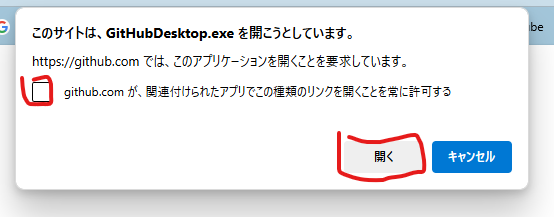
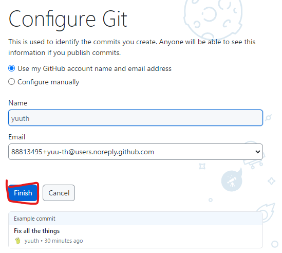
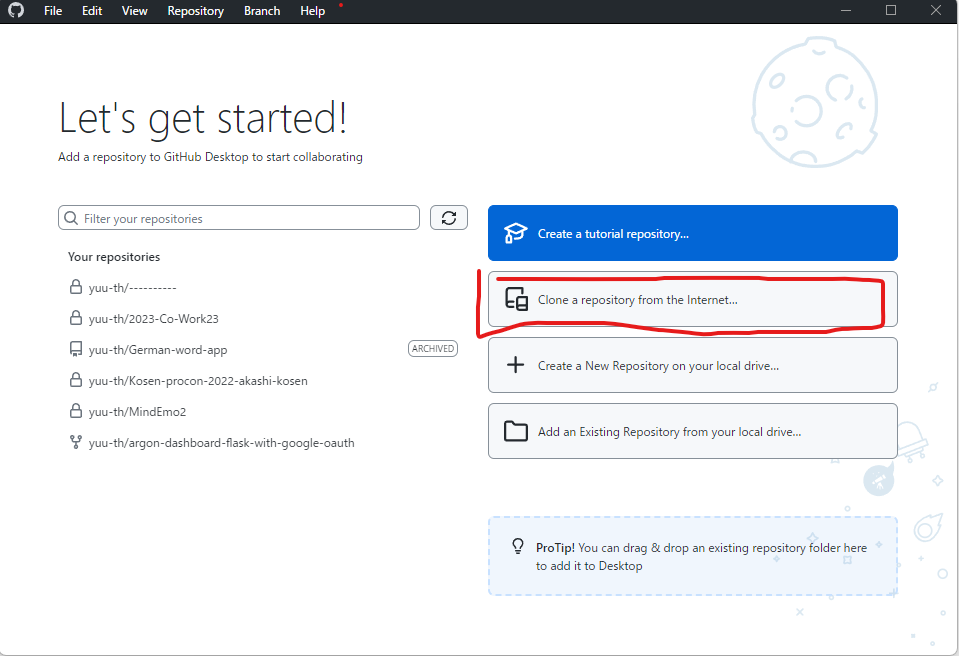

以下のURLを開きます
ダウンロードボタンをクリックすると、Git-2.37.1-64-bit.exe（バージョン番号は異なる場合があります）が自動的にダウンロードされます。
 これを開きます
これを開きます
ダウンロードしたインストーラー（Git-2.37.1-64-bit.exe）を実行します。
「Next」をクリックします。(ライセンスの確認)
「Next」をクリックします。(インストール先の選択)

「Next」をクリックします。(コンポーネント選択)
「Next」をクリックします。(スタートメニューのフォルダ選択)

Use Visual Studio Code を選択してください
(もし、Next連打をしている場合、Backを押して戻れますよ)

「Next」をクリックします。

「Next」をクリックします。(branch名の設定)
Use Git from the command line and also from 3rd-party software を選択してください。そして、「Next」をクリックします。

「Next」をクリックします。(OpenSSHの設定)
「Next」をクリックします。(HTTPSの設定)

Windows-style, commit Unix-style line endings を選択してください。
そして、「Next」をクリックします。

「Next」をクリックします。(terminalの設定)

「Next」をクリックします。(git pushの設定)
「Next」をクリックします。(credential managerの設定)

「Enable symbolic links」も選択してください。
そして、「Install」をクリックします。

インストールが完了したら、「Finish」をクリックします。

ターミナルを起動します。
ターミナルは、Windows + Rを押して、cmdと入力してEnterを押すか、

Windowsボタンを押して、cmdと入力してEnterを押します。

ユーザー名を設定します。以下のコマンドを実行してください。
git config --global user.name ユーザー名
私の場合は
git config --global user.name yuu-th
です。あなたが、Githubで使っているユーザー名を入力してください。
メールアドレスを設定します。以下のコマンドを実行してください。
git config --global user.email メールアドレス
私の場合は
git config --global user.email yutakato333@gmail.com
です。あなたが、Githubに登録(sign up)したメールアドレスを入力してください。
SSHキーを作成します。以下のコマンドを実行してください。そして、なんかでてきますけど、Enterを何回か押してください。
ssh-keygen

常に、赤く示した部分をクリックしていけばよいです
まず、以下のURLを開きます


とりあえず、ダウンロードしたファイルを開く、実行するのです
おそらく皆さん、Githubのアカウントがないと思うので、アカウントを作ります。 （既にアカウントを持っている方は、サインインしてください。）
全ての画面を埋めて、Continueを押してください。 そして、いろいろ進めて、Githubのアカウントを作成してください。
(※ここで余談。部長カトーは、様々なアプリでアカウントを100個以上持っています。ですが、パスワードをひとつも覚えていません。パスワード管理ソフトを使っています。無料で結構おすすめなのはBitwardenです。)


Nameとかに表示されているテキストは異なっていますが、Finishを押して 


 ここに、以下のURLをコピペしてください(Control + C 同時押しでコピー、 Control + Vでペーストしてください。)
ここに、以下のURLをコピペしてください(Control + C 同時押しでコピー、 Control + Vでペーストしてください。)
https://github.com/yuu-th/shobon.git
 コピペしたら、Cloneをクリック
コピペしたら、Cloneをクリック
このように青く表示されている状態で、コピー(Control + C)してください。
次にUnity Hubを開きます。
windowsのスタートボタンを押して、「Unity Hub」と入力して、Enterを押してください。
Unity Hubが開いたら、左上の「Open」をクリックします。


ペースト(Control + V)して、Enterを押してください。ここのテキスト(パス)はユーザーによって異なります。
そしたら、Openを押してください。

これで、プロジェクトをUnityで開くことができました。起動迄は少し時間がかかります。